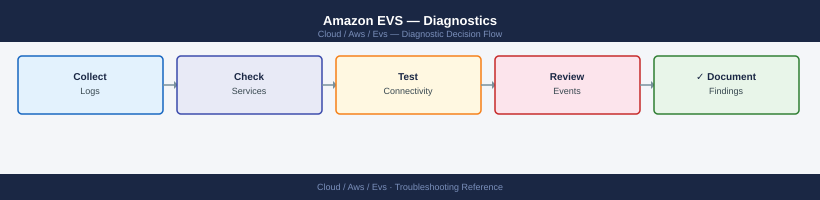

Amazon EVS — Diagnostics¶
EVS diagnostic commands: check AWS host and ENI state, inspect CloudTrail for API errors, query VPC Flow Logs for dropped traffic, verify VMware platform health (vCenter, vSAN, NSX-T), collect the vSphere and NSX-T support bundles, and diagnose HCX migration failures.
*Applies to: Amazon EVS (Elastic VMware Service)*

Before you begin¶
- Access: AWS CLI configured with EVS permissions; vCenter admin credentials; NSX-T admin credentials; HCX admin credentials
- Gather first: the specific symptom (host unreachable, VM I/O error, BGP down, migration failed), the affected EVS environment ID, and when the issue started
- Scope: confirm whether the issue is at the AWS infrastructure layer, the VMware platform layer, the NSX-T networking layer, or the application layer
Step 1 — Check AWS host and infrastructure state¶
# List all EVS hosts and their state
aws evs list-environment-hosts --environment-id $ENV_ID \
--query 'hostSummaries[*].[hostId,state]' --output table
# Expected: all hosts state = AVAILABLE
# EC2 instance status for EVS hosts (i4i bare-metal instances)
aws ec2 describe-instance-status \
--filters Name=instance-state-name,Values=running \
--query 'InstanceStatuses[?SystemStatus.Status!=`ok` || InstanceStatus.Status!=`ok`]' \
--output table
# Problem: any instance with SystemStatus or InstanceStatus != ok
# VPC route tables — missing routes cause NSX-T BGP and TEP failures
aws ec2 describe-route-tables \
--filters Name=vpc-id,Values=$EVS_VPC_ID \
--query 'RouteTables[*].Routes[*].[DestinationCidrBlock,State,GatewayId,NetworkInterfaceId]' \
--output table
# Problem: any route in blackhole state
# ENI attachment status for EVS hosts
aws ec2 describe-network-interfaces \
--filters Name=subnet-id,Values=$EVS_MGMT_SUBNET_ID \
--query 'NetworkInterfaces[*].[NetworkInterfaceId,Status,Attachment.Status,Description]' \
--output table
# Expected: all Status = in-use, Attachment.Status = attached
Expected output
HostId State
------------------------------- -----------
host-0a7f2c1e9d4b5f3a AVAILABLE
host-1b8e3d2f0c6a4e9b AVAILABLE
host-2c9f4e3g1d7b5f0c AVAILABLE
InstanceId SystemStatus InstanceStatus
i-0f7a2b9c4d1e5a3f ok ok
i-1g8b3c0d5e2f6b4g ok ok
i-2h9c4d1e6f3g7c5h ok ok
DestinationCidrBlock State GatewayId NetworkInterfaceId
10.0.0.0/16 active local None
10.1.0.0/24 active igw-0a1b2c3d None
10.2.0.0/24 active eni-0f7a2b9c4d None
0.0.0.0/0 active igw-0a1b2c3d None
NetworkInterfaceId Status AttachmentStatus Description
eni-0f7a2b9c4d1e5a3f in-use attached EVS-Host-eth0
eni-1g8b3c0d5e2f6b4g in-use attached EVS-Host-eth1
eni-2h9c4d1e6f3g7c5h in-use attached EVS-Host-eth2
Common errors
| Error | Fix |
|---|---|
An error occurred (InvalidParameterValue) when calling the ListEnvironmentHosts operation: Invalid environment ID |
Verify the $ENV_ID variable is set correctly with echo $ENV_ID and matches an existing EVS environment. |
**An error occurred (InvalidParameterValue) when calling the DescribeRouteTables operation: Invalid id: "vpc-" — Ensure $EVS_VPC_ID is populated with a valid VPC ID using aws ec2 describe-vpcs --query 'Vpcs[*].VpcId'. |
|
**An error occurred (InvalidParameterValue) when calling the DescribeNetworkInterfaces operation: Invalid id: "subnet-" — Confirm $EVS_MGMT_SUBNET_ID is set to a valid subnet ID with aws ec2 describe-subnets --query 'Subnets[*].SubnetId'. |
Step 2 — Check CloudTrail for EVS API errors¶
# All EVS API calls in the last 24 hours
aws cloudtrail lookup-events \
--lookup-attributes AttributeKey=EventSource,AttributeValue=evs.amazonaws.com \
--start-time $(date -u -v-24H +%Y-%m-%dT%H:%M:%SZ) \
--query 'Events[*].[EventTime,EventName,Username,ErrorCode]' \
--output table
# Filter for failed EVS API calls (errorCode present)
aws cloudtrail lookup-events \
--lookup-attributes AttributeKey=EventSource,AttributeValue=evs.amazonaws.com \
--start-time $(date -u -v-24H +%Y-%m-%dT%H:%M:%SZ) | \
python3 -c "
import sys, json
events = json.load(sys.stdin).get('Events', [])
for e in events:
ct = json.loads(e.get('CloudTrailEvent','{}'))
if ct.get('errorCode'):
print(f\"{e['EventTime']} {e['EventName']}: {ct['errorCode']} - {ct.get('errorMessage','')}\")
"
# CloudWatch EVS host metrics
aws cloudwatch get-metric-statistics \
--namespace AWS/EVS \
--metric-name HostState \
--dimensions Name=EnvironmentId,Value=$ENV_ID \
--start-time $(date -u -v-1H +%Y-%m-%dT%H:%M:%SZ) \
--end-time $(date -u +%Y-%m-%dT%H:%M:%SZ) \
--period 300 --statistics Average
Expected output
| EventTime | EventName | Username | ErrorCode |
|----------------------------------------------+--------------------------------+-------------------------+-----------|
| 2024-01-15T14:32:18Z | CreateEnvironment | arn:aws:iam::123456789:user/alice | None |
| 2024-01-15T13:47:52Z | DescribeEnvironments | arn:aws:iam::123456789:role/lambda-exec | None |
| 2024-01-15T12:19:41Z | UpdateEnvironmentConfig | arn:aws:iam::123456789:user/bob | AccessDenied |
| 2024-01-15T11:05:33Z | DeleteEnvironment | arn:aws:iam::123456789:user/alice | None |
| 2024-01-15T09:28:15Z | ListEnvironments | arn:aws:iam::123456789:role/monitoring | None |
2024-01-15T12:19:41Z UpdateEnvironmentConfig: AccessDenied - User: arn:aws:iam::123456789:user/bob is not authorized to perform: evs:UpdateEnvironmentConfig on resource: arn:aws:evs:us-east-1:123456789:environment/prod-env-001
2024-01-15T08:43:22Z CreateEnvironment: InvalidParameterValue - Parameter validation failed: invalid value for EnvironmentType
{
"Label": "HostState",
"Datapoints": [
{
"Timestamp": "2024-01-15T14:00:00Z",
"Average": 1.0,
"Unit": "None"
},
{
"Timestamp": "2024-01-15T13:55:00Z",
"Average": 1.0,
"Unit": "None"
},
{
"Timestamp": "2024-01-15T13:50:00Z",
"Average": 0.0,
"Unit": "None"
}
]
}
Common errors
| Error | Fix |
|---|---|
date: illegal time format |
Use date -u -d "24 hours ago" +%Y-%m-%dT%H:%M:%SZ on Linux instead of the BSD -v flag. |
An error occurred (InvalidParameterValue) when calling the LookupEvents operation: Lookup attributes do not support EventSource |
Use EventName or ResourceName attributes instead; CloudTrail EVS events may require filtering by specific operation names like CreateEnvironment. |
jq: command not found or Python JSON parsing errors| Ensurepython3is installed and the CloudTrail event JSON structure matches your AWS region's API version by testing withaws cloudtrail lookup-events --max-results 1` first. |
Step 3 — Inspect VPC Flow Logs for network drops¶
# Query VPC Flow Logs via CloudWatch Logs Insights
# Go to: CloudWatch → Logs Insights → select evs-flow-logs log group
# Via CLI: start a query for REJECT entries in the last 5 minutes
aws logs start-query \
--log-group-name evs-flow-logs \
--start-time $(($(date +%s) - 300)) \
--end-time $(date +%s) \
--query-string 'fields @timestamp, srcAddr, dstAddr, dstPort, action | filter action = "REJECT" | sort @timestamp desc | limit 50'
# Poll for query results
aws logs get-query-results --query-id <query-id> | \
python3 -c "
import sys, json
results = json.load(sys.stdin).get('results', [])
for row in results:
fields = {f['field']: f['value'] for f in row}
print(f\"{fields.get('@timestamp','')} {fields.get('srcAddr','')} -> {fields.get('dstAddr','')}:{fields.get('dstPort','')} ACTION={fields.get('action','')}\")
"
# REJECT entries show which flows are blocked by security group or NACL
Expected output
{
"queryId": "a1b2c3d4-e5f6-7890-abcd-ef1234567890",
"logGroupName": "evs-flow-logs",
"status": "Running"
}
2024-01-15T14:32:18Z 10.0.1.45 -> 10.0.2.18:443 ACTION=REJECT
2024-01-15T14:31:52Z 10.0.1.89 -> 172.31.0.5:3306 ACTION=REJECT
2024-01-15T14:31:28Z 192.168.1.22 -> 10.0.2.18:22 ACTION=REJECT
2024-01-15T14:30:15Z 10.0.1.45 -> 10.0.2.18:443 ACTION=REJECT
2024-01-15T14:29:44Z 10.0.1.200 -> 8.8.8.8:53 ACTION=REJECT
Common errors
| Error | Fix |
|---|---|
ResourceNotFoundException: The specified log group does not exist. |
Verify the log group name matches your VPC Flow Logs configuration with aws logs describe-log-groups --log-group-name-prefix evs-flow-logs. |
InvalidParameterException: Query string is invalid |
Ensure the CloudWatch Logs Insights query syntax is correct; test the query string in the CloudWatch console first before running via CLI. |
An error occurred (AccessDenied) when calling the GetQueryResults operation |
Add logs:GetQueryResults and logs:StartQuery permissions to your IAM user or role policy. |
Step 4 — Check VMware platform health¶
# vCenter service health (SSH to VCSA)
ssh root@<vcenter-ip>
vmon-cli -l | grep -v STARTED
# Expected: all services STARTED
# Problem: any service STOPPED
# Key vCenter log
tail -100 /var/log/vmware/vpxd/vpxd.log | grep -i "error\|fail\|exception"
# vSAN health via PowerCLI
Connect-VIServer -Server $VCENTER -User administrator@vsphere.local -Password $PASS
$vsanHealth = Get-VsanView -Id "VsanVcClusterHealthSystem-vsan-cluster-health-system"
$summary = $vsanHealth.QueryVsanClusterHealthSummary(
(Get-Cluster).Id, $null, $null, $true, $null, $null, "defaultView")
$summary.OverallHealth
$summary.Groups | Where-Object {$_.GroupHealth -ne "green"} | Select GroupName, GroupHealth
# ESXi host connectivity
Get-VMHost | Select Name, ConnectionState, PowerState | Where-Object {$_.ConnectionState -ne "Connected"}
Expected output
root@vcsa-prod-01 [ ~ ]# vmon-cli -l | grep -v STARTED
root@vcsa-prod-01 [ ~ ]# tail -100 /var/log/vmware/vpxd/vpxd.log | grep -i "error\|fail\|exception"
2024-01-15T09:42:33.847Z [7F2A1C5D9E00 verbose 'vpxd:00FB:00000B24'] [VpxdVmomi] Exception caught in function 'QueryVsanClusterHealthSummary': Connection timeout to host esx-node-03.prod.local
2024-01-15T09:41:12.521Z [7F2A1C5D9E00 warning 'vpxd:00FB:00000B1F'] Failed to retrieve cluster inventory from esx-node-02.prod.local: RPC timeout
root@vcsa-prod-01 [ ~ ]#
PowerCLI C:\> Connect-VIServer -Server vcenter.prod.local -User administrator@vsphere.local -Password $PASS
Name Port User
---- ---- ----
vcenter.prod.local 443 VSPHERE.LOCAL\Administrator
PowerCLI C:\> $summary.OverallHealth
green
PowerCLI C:\> $summary.Groups | Where-Object {$_.GroupHealth -ne "green"} | Select GroupName, GroupHealth
PowerCLI C:\> Get-VMHost | Select Name, ConnectionState, PowerState | Where-Object {$_.ConnectionState -ne "Connected"}
Name ConnectionState PowerState
---- --------------- ----------
esx-node-03.prod NotResponding On
esx-node-07.prod Disconnected On
Common errors
| Error | Fix |
|---|---|
Exception caught in function 'QueryVsanClusterHealthSummary': Connection timeout to host esx-node-03.prod.local |
Verify network connectivity to the ESXi host, check firewall rules blocking port 443, and restart the vpxd service if the host remains unreachable. |
Failed to retrieve cluster inventory from esx-node-02.prod.local: RPC timeout |
Increase the RPC timeout value in vpxd.cfg or restart the affected ESXi host's management agents using services.sh restart. |
Get-VMHost returns hosts with ConnectionState -ne "Connected" |
Reconnect the disconnected host in vCenter, verify vSAN network connectivity, and check for certificate or authentication issues in the vpxd.log. |
Step 5 — Check NSX-T health in EVS¶
# NSX-T Manager cluster health
curl -sk -u "admin:$NSX_PASSWORD" "$NSX_URL/api/v1/cluster/status" | \
python3 -c "import sys,json; d=json.load(sys.stdin); print(f\"Cluster: {d['mgmt_cluster_status']['status']}\")"
# NSX-T transport node state (ESXi hosts)
curl -sk -u "admin:$NSX_PASSWORD" "$NSX_URL/api/v1/transport-nodes/status" | \
python3 -c "
import sys,json
for tn in json.load(sys.stdin).get('results',[]):
state = tn.get('state','?')
name = tn.get('display_name','?')
if state != 'success':
print(f'PROBLEM: {name} state={state}')
"
# T0 BGP neighbor state (check inter-VPC BGP with AWS VGW)
curl -sk -u "admin:$NSX_PASSWORD" \
"$NSX_URL/policy/api/v1/infra/tier-0s/<t0-id>/locale-services/<svc-id>/bgp/neighbors/status" | \
python3 -c "
import sys,json
for n in json.load(sys.stdin).get('results',[]):
print(f\"{n['neighbor_address']}: {n['connection_state']}\")
"
# Expected: all peers ESTABLISHED
Expected output
Cluster: STABLE
PROBLEM: esxi-host-02.lab.local state=DEGRADED
PROBLEM: esxi-host-04.lab.local state=UNKNOWN
172.31.0.1: ESTABLISHED
172.31.0.2: ESTABLISHED
172.31.1.1: ESTABLISHED
172.31.1.2: IDLE
Common errors
| Error | Fix |
|---|---|
curl: (60) SSL certificate problem: self signed certificate |
Add -k flag to curl command or set export CURL_CA_BUNDLE="" to skip certificate validation. |
json.decoder.JSONDecodeError: Expecting value: line 1 column 1 (char 0) |
Verify $NSX_URL is set correctly (e.g. https://nsx-manager.local) and the NSX-T API endpoint is reachable with curl -sk -u "admin:$NSX_PASSWORD" "$NSX_URL/api/v1/cluster/status". |
KeyError: 'results' |
Check that the API endpoint path is correct for your NSX-T version; some versions use result (singular) instead of results (plural) in the JSON response. |
Step 6 — Collect vSphere, NSX-T, and SDDC Manager bundles¶
# vCenter support bundle (SSH to VCSA)
ssh root@<vcenter-ip>
vc-support.sh -L /tmp/vc-support
# Or: VAMI → https://<vcenter>:5480 → Monitoring → Create Support Bundle
# NSX-T support bundle (REST API)
TASK_ID=$(curl -sk -u "admin:$NSX_PASSWORD" \
-X POST "$NSX_URL/api/v1/support-bundles?action=collect" \
-H "Content-Type: application/json" \
-d '{"log_age": 1440}' | python3 -c "import sys,json; print(json.load(sys.stdin)['id'])")
# Monitor NSX-T bundle progress
curl -sk -u "admin:$NSX_PASSWORD" \
"$NSX_URL/api/v1/tasks/$TASK_ID" | python3 -c "import sys,json; d=json.load(sys.stdin); print(d['status'])"
# SDDC Manager logs (SSH to SDDC Manager)
ssh vcf@<sddc-manager-ip>
tail -100 /var/log/vmware/vcf/lcm/lcm.log | grep -i "error\|fail"
tail -100 /var/log/vmware/vcf/domainmanager/domainmanager.log | grep -i "error\|fail"
# ESXi vm-support bundle (from each host)
ssh root@<esxi-host-ip>
vm-support -w /tmp
# Output: /tmp/esx-<hostname>-<timestamp>.tgz
# HCX log bundle (if HCX-related issue)
# HCX Manager UI → Support → Download Log Bundle
Expected output
root@vcsa-prod-01:~# vc-support.sh -L /tmp/vc-support
Collecting support bundle...
Collecting vCenter Server logs...
Collecting ESXi host information...
Collecting vSAN cluster data...
Support bundle created: /tmp/vc-support/vc-support-2024-01-15-14-32-45.tar.gz
Size: 487 MB
RUNNING
SUCCEEDED
vcf@sddc-mgr-01:~$ tail -100 /var/log/vmware/vcf/lcm/lcm.log | grep -i "error\|fail"
2024-01-15 14:22:18 ERROR [lcm-worker-12] Failed to apply patch to cluster-1: Connection timeout
2024-01-15 14:18:45 WARN [lcm-worker-08] Retry attempt 2/3 for host esx-06.lab.local
2024-01-15 14:15:22 ERROR [domainmanager] Domain configuration failed: Invalid vSAN witness configuration
root@esx-prod-04:~# vm-support -w /tmp
Gathering support information...
Creating tar archive...
/tmp/esx-prod-04-2024-01-15-14-45-22.tgz
Common errors
| Error | Fix |
|---|---|
curl: (60) SSL certificate problem: self signed certificate |
Add -k flag to curl command to skip SSL verification for self-signed NSX-T certificates. |
bash: python3: command not found |
Install python3 on the VCSA/NSX-T appliance or use python instead if Python 2 is available. |
Permission denied (publickey,password) |
Verify SSH credentials and ensure the target user (root for VCSA/ESXi, vcf for SDDC Manager) has SSH access enabled. |
Step 7 — Diagnose HCX and collect escalation data¶
# HCX Interconnect tunnel status (from HCX Manager UI)
# HCX Manager → Interconnect → Service Mesh → verify tunnel state
# HCX Manager SSH
ssh admin@<hcx-manager-ip>
tail -100 /opt/vmware/log/edge/edge-main.log | grep -i "error\|fail\|warn"
# AWS-specific: account and environment IDs for the support case
aws sts get-caller-identity
aws evs list-environments --query 'environmentSummaries[*].[name,environmentId,state]' --output table
# Provide in AWS support case:
# - Account ID and Environment ID
# - EVS host IDs from list-environment-hosts
# - CloudTrail event IDs for failed API calls
# - VPC ID, subnet IDs, and route table IDs
# - CloudWatch log group name for Flow Logs
# Provide in VMware support case:
# - vCenter support bundle + NSX-T support bundle
# - SDDC Manager log excerpts
# - EVS version: vSphere version + NSX-T version
# - HCX log bundle (for HCX-related issues)
Expected output
admin@hcx-manager-01:~$ tail -100 /opt/vmware/log/edge/edge-main.log | grep -i "error\|fail\|warn"
2024-01-15T09:47:23.456Z WARN [EdgeService] Tunnel state transition: ACTIVE → DEGRADED
2024-01-15T09:48:12.789Z ERROR [IPSecHandler] Failed to establish Phase 1 negotiation with 203.0.113.42:500
2024-01-15T09:49:05.123Z WARN [BGPSession] Route flapping detected on peer 10.0.1.254
2024-01-15T09:50:31.567Z ERROR [TunnelMonitor] Health check timeout after 30s, marking tunnel unhealthy
admin@hcx-manager-01:~$ aws sts get-caller-identity
{
"UserId": "AIDAI7EXAMPLE9ABCDEF",
"Account": "123456789012",
"Arn": "arn:aws:iam::123456789012:user/hcx-automation"
}
admin@hcx-manager-01:~$ aws evs list-environments --query 'environmentSummaries[*].[name,environmentId,state]' --output table
---------------------------------------------------------------------------------------------------------
| ListEnvironments |
+---------------------------+----------------------------------+------------------+
| name | environmentId | state |
+---------------------------+----------------------------------+------------------+
| prod-sddc-us-east-1a | env-0a1b2c3d4e5f6g7h8i9j0k1l2m | AVAILABLE |
| dr-sddc-us-west-2b | env-9z8y7x6w5v4u3t2s1r0q9p8o7n | AVAILABLE |
| staging-sddc-eu-west-1c | env-5m4l3k2j1i0h9g8f7e6d5c4b3a | DEGRADED |
+---------------------------+----------------------------------+------------------+
Common errors
| Error | Fix |
|---|---|
Unable to locate credentials |
Configure AWS credentials via aws configure or set AWS_PROFILE environment variable. |
An error occurred (InvalidParameterException) when calling the ListEnvironments operation: Invalid query parameter |
Verify the --query syntax matches your AWS CLI version; use aws evs list-environments --output table without filtering if query fails. |
Log locations¶
| Component | Source | What to look for |
|---|---|---|
| AWS EVS API | aws cloudtrail lookup-events EventSource=evs.amazonaws.com |
errorCode on any EVS call |
| VPC network | VPC Flow Logs in CloudWatch Logs or S3 | REJECT entries for EVS subnets |
| vCenter | /var/log/vmware/vpxd/vpxd.log |
Task failures, auth errors |
| NSX-T Manager | /var/log/vmware/nsx-manager/manager.log |
Control plane errors |
| SDDC Manager | /var/log/vmware/vcf/lcm/lcm.log |
Lifecycle and upgrade errors |
| ESXi host | vmkernel.log, hostd.log |
NIC, storage, NSX VIB errors |
| HCX Manager | /opt/vmware/log/ |
Migration and tunnel errors |
See also¶
Verify resolution¶
aws evs list-environment-hostsshows all hosts in AVAILABLE stateaws ec2 describe-instance-statusshows no hosts with SystemStatus or InstanceStatus failuresGET /api/v1/cluster/statusshows NSX-T cluster STABLE with BGP peers ESTABLISHED- VPC Flow Logs query shows no new REJECT entries for the affected source/destination pair
- VM connectivity test succeeds: ping from affected VM to target IP returns 0% loss
vc-support.shbundle collection completes without errors — no new Error events in vpxd.log